Semantics of Datalog with Equalities
Abstract
We discuss the syntax and semantics of relational Horn logic (RHL) and partial Horn logic (PHL).
RHL is an extension of the Datalog programming language that allows introducing and equating variables in conclusions.
PHL is an extension of RHL by partial functions and one of the many equivalent notions of essentially algebraic theory.
Our main contribution is a new construction of free models.
We associate to RHL and PHL sequents classifying morphisms, which enable us to characterize logical satisfaction using lifting properties.
We then obtain free and weakly free models using the small object argument.
The small object argument can be understood as an abstract generalization of Datalog evaluation.
It underpins the implementation of the Eqlog Datalog engine, which computes free models of PHL theories.
1 Introduction
Datalog [
11] is a programming language for logical inference from Horn clauses.
Abstracting from concrete syntax, a Datalog program consists of the following declarations:
A
fact is an expression of the form where each

is a constant symbol of the appropriate sort.
Given a Datalog program and a set of input facts, a
Datalog engine computes the set of facts that can be derived from the input facts by repeated application of sequents.
A typical example of a problem that can be solved using Datalog is the computation of the transitive closure of a (directed) graph.
Graphs are given by a binary relation 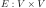 of edges among a sort

of vertices.
The only axiom of transitive graphs is the transitivity axiom
A set of input facts for this Datalog program is given by a set of of expressions 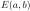, where are constant symbols.
We identify such data with the data of a graph with vertices and edges .
Every finite graph in which every vertex appears in some edge arises in this way, so we conflate such graphs and sets of facts.
(Standard Datalog does not support constants that do not appear in a fact.)
Given the Datalog program for transitive graphs and a corresponding set of facts, a Datalog engine enumerates all matches of the premise of the transitivity axiom, i.e. all substitutions 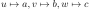 such that that the substituted conjuncts of the premise, and 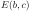, are in the set of input facts.
For each such substitution, the Datalog engine then adds the substitution 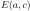 of the conclusion to the set of facts.
This process is repeated until the set of facts does not increase anymore, that is, until a fixed point has been reached.
This final set of facts now corresponds to a transitive graph.
Datalog has seen renewed interest in recent years for the implementation of program analysis tools [
10,
9,
8].
From a high-level point of view, one applies Datalog by encoding abstract syntax trees as tuples in relations:
Each type of abstract syntax tree node translates into a relation. If the node type as

children, then the relation has 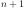 entries, one entry for each children and one entry representing the node itself.
This encoding allows executing Datalog programs on inputs that are derived from source code.
Of course, the abstract syntax tree need not be encoded faithfully if some of its features are not required for the analysis one is interested in.
Equality saturation has recently garnered interest as a program optimization technique [
13].
The idea is to insert expressions that should be optimized into an e-graph, and then close the e-graph under a set of rewrite rules.
E-graphs allow sharing nodes that occur as children more than once, so that a large number of expressions can be stored.
Furthermore, e-graphs can be efficiently closed under congruence, i.e. equivalence can be propagated from subexpressions to their parents.
After a suitable number of rewrite rules have been applied and the e-graph has been closed under congruence, one selects a suitable equivalent expression from the equivalence class of the expression one is interested in according to a cost function.
Crucially, equality saturation makes considerations about the order of rewrites unnecessary.
In this paper, we study languages and corresponding semantics that combine and subsume both Datalog and the applications of e-graphs outlined above.
To that end, we extend Datalog by
equality, that is, the ability of enforce an equality 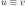 in the conclusion of a sequent.
One example is the order-theoretic antisymmetry axiom
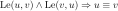
which is not valid Datalog due to the equality atom , but allowed in our extension.
If during evaluation of RHL an equality among constants 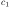 and 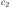 is inferred, then we expect the system to not distinguish and from then on.
In other words, inferred equality should behave as congruence with respect to relations.
For example, the premise 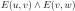 of the premise of the transitivity axiom should match 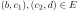 if the equality 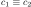 has been inferred earlier.
In addition to a set of derived facts, we also expect evaluation to yield an equivalence relation on each sort, representing inferred equalities.
Relational Horn logic extends Datalog further by free variables matching any element of a sort, and by variables that only occur in a conclusion.
We interpret the latter as existentially quantified:
If the premise of a sequent matches and the conclusion contains a variable that is not bound in the premise, then we expect the Datalog engine to create new identifiers of the given sort if necessary to ensure that the conclusion holds.
Partial Horn logic, originally due to [
6], is a layer of syntactic sugar on top RHL, i.e. a purely syntactic extension with the same descriptive power.
PHL adds function symbols 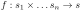, which desugar into relations

representing the graph of the function and the functionality axiom
In positions where RHL expects variables (e.g. arguments of predicates or in equations), PHL allows also composed terms.
These composed terms are desugared into a fresh variable corresponding to the result of applying the function and an assertion about the graph of the function.
The features of PHL allow implementing more algorithms than standard Datalog, for example congruence closure [
4], Steensgaard-style pointer analysis [
3] and Hindley-Milner type inference [
2].
In each case, evaluation (which will be described in follow-up work) of the PHL theory encoding the problem domain yields the same algorithm as the standard domain-specific algorithm.
In general, we should expect problems that are typically solved by combining union-find data structures with fixed point computations to be instances of PHL evaluation.
Partial Horn logic is one of the equivalent notions of essentially algebraic theory.
Essentially algebraic theories generalize the better-known algebraic theories of universal algebra by allowing functions to be partial.
Crucially, the free model theorem of universal algebra continues to hold also for essentially algebraic theories.
Free models are the basis of our semantics of PHL evaluation.
We show that free models can be computed using the small object argument, which we shall come to understand as an abstract generalization of Datalog evaluation.
In brief, the relation of free models and Datalog evaluation can be understood for the transitivity Datalog program outlined above as follows.
We have seen that input data for this Datalog program represent certain graphs 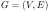, while output data represent transitive graphs 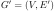.
The two graphs 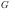 and 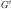 share the same set of vertices
, which is the set of constant symbols that appear in the set of input facts.
Intuitively, arises from by adding data that must exist due to the transitivity axiom but no more.
Let us rephrase the relation between and using category theory.
Denote by 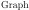 the category of graphs:
A morphism 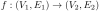 between graphs is a map 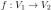 that preserves the edge relation.
Thus if 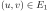, then we must have 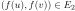.
The requirement that the output graph arises from the input solely by application of the transitivity sequent can now be summarized as follows:
Proposition 1.
Let be the output graph generated from evaluating the transitivity Datalog program on a finite input graph .
Then is the free transitive graph over .
Proof.
First we must exhibit a canonical graph morphism 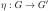.
As and share the same set of vertices, we choose 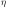 simply as identity map on
.
Note that the identity on
is indeed a graph morphism 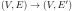 because .
Now we must show that for all graph morphisms where 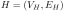 is a transitive graph, there exists a unique graph morphism 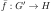 such that the following triangle commutes:
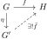
Because is the identity map, it suffices to show that 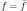 also defines a graph morphisms 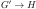; uniqueness of follows from surjectivity of .
Recall that arises from repeatedly matching the premise of the transitivity axiom and adjoining its conclusion.
Thus there is a finite chain
where for each

there exist 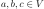 such that
(1)
(1)
By induction, it suffices to show for all
that

is a graph morphism , assuming that
is a graph morphisms .
Choose 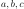 such that and
(1) is satisfied.
Because
is a graph morphism , we have 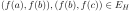.
Because 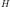 is transitive, it follows that 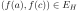.
Thus
preserves the edge 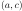 and hence constitutes a graph morphism .
Denote by 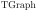 the full subcategory of given by the transitive graphs.
The inclusion functor has a left adjoint, a
reflector, which is given by assigning a graph to its transitive hull.
Thus Proposition
1 shows that the transitivity Datalog program computes the reflector.
Our primary goal in this paper is to explore and extend a semantics of PHL along these lines.
Outline and Contributions.
In Section
2, we review the
small object argument [
12, Theorem 2.1.14] as a method of computing weak reflections into subcategories of injective objects.
We introduce
strong classes of morphisms, for which the small object argument specializes to the
orthogonal-reflection construction [
7, Chapter 1.C].
In Section
3, we introduce
relational Horn logic (RHL).
RHL extends Datalog with unbound variables, with variables that occur only in the conclusion, and with equations.
Input data of Datalog programs generalize to finite
relational structures, and output data generalize to
models, i.e. relational structures that satisfy all sequents.
We show that free models exist for
strong RHL theories, which include all Datalog theories.
Our poof of the existence of free models associates to each RHL sequent a classifying morphism of relational structures.
Satisfaction of the sequent can be characterized as lifting property against the classifying morphism.
The small object argument now shows the existence of free models for strong theories.
From this perspective, we may thus understand the small object argument as an abstract formulation of Datalog evaluation.
In Section
4, we extend RHL by function symbols to obtain
partial Horn logic (PHL).
By identifying each function symbol with a relation symbol representing its graph and adding a functionality axiom, every PHL theory gives rise to a relational Horn logic theory with equivalent semantics.
For
epic PHL theories, where all variables must be introduced in the premise of a sequent, the associated RHL theory is strong.
Conversely, we show that the semantics of every strong RHL theory can be recovered as semantics of an epic PHL theory.
This justifies the usage of epic PHL as an equally powerful but syntactically better-behaved language compared to strong RHL.
The results of this paper serve as semantics of
Eqlog, a Datalog engine that computes free models of PHL theories.
Eqlog's algorithm is based on an efficient implementation of the small object argument that combines optimized Datalog evaluation (semi-naive evaluation and indices) with techniques used in congruence closure algorithms.
Independently of Eqlog and the work presented there, members of the Egg [
13] community have created the
Egglog tool, which combines Datalog with e-graphs and is based on very similar ideas as those of Eqlog.
2 The Small Object Argument
This section is a review of the small object argument, which we shall in later sections come to understand as an abstract description of Datalog evaluation.
The concepts we discuss here are not new and are in fact widely known among homotopy theorists; see for example [
7] for a standard exposition.
A minor innovation is our consideration of
strong sets:
Sets of morphisms for which injectivity coincides with orthogonality.
For strong sets, the small object argument yields a reflection into the orthogonal subcategory where in general we would obtain only a weak reflection into the injective subcategory.
The related
orthogonal-reflection construction [
7, Chapter 1.C] produces a reflection into the orthogonal subcategory for arbitrary sets of morphisms

.
We show that every set of morphism
can be extended to a strong set 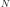 such that
and induce the same orthogonality class.
The small object argument for now specializes to the orthogonal-reflection construction for
.
Thus, the concept of strong morphisms can be used to understand the orthogonal-reflection construction as a specialized variation of the small object argument.
Fix a cocomplete category locally small 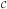 for the remainder of this section.
We reserve the word set for a small set, while a class refers to a set in a larger set-theoretic universe that contains the collection of objects in .
All colimits of set-indexed diagrams in exist, while colimits of class-indexed diagrams need not exist.
Definition 2.
Let be a morphism and let 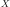 be an object.
We write and say that is
injective to
if for all maps 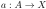 there exists a map such that
commutes.
If furthermore

is unique for all 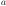, then we write

and say that is
orthogonal to
.
If
is a class of morphisms, then we write 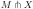 if for all 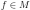, and 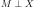 if
for all .
The full subcategories given by the injective and orthogonal objects, respectively, are denoted by

and

.
We call
the
injectivity class of
and
the
orthogonality class of
.
Definition 3.
A class
of morphisms is called
strong if 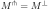.
One of the main sources of strong sets is the following proposition:
Proposition 4.
Let
be a class of epimorphisms.
Then
is strong.
Proof.
This follows immediately from right-cancellation.
Another source of strong sets is the following proposition.
It lets us reduce questions about orthogonality classes to strong injectivity classes.
Proposition 5.
Let
be a class of morphisms.
Then there exists a superclass such that is strong and .
If
is a set, then can be chosen as set.
Proof.
Let be a morphism in
.
Then for each object , the data of a single map and two maps 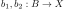 such that
commutes for is in bijective correspondence to a map .
Let
be the canonical map that collapses the two copies of into one.
Then if and only if there exists a map
such that
commutes.
The map is an epimorphism.
Thus if
exists, then it exists uniquely, and .
It follows that is orthogonal to
if and only if
is injective to both
and .
The desired class can thus be defined by .
Definition 6.
A
sequence of morphisms is a diagram of the form
for a countable set of morphisms.
The
composition of a sequence of morphisms is the canonical map
to the colimit of the sequence.
Note that the composition of a sequence of morphisms is uniquely determined only up to a choice of colimit.
Definition 7.
Let
be a class of morphisms.
The class of
relative -cell complexes is the least class of morphisms such that the following closure properties hold:
-

.
-
is closed under coproducts.
That is, if is a family of morphisms indexed by some set

and for all , then
is in .
-
is closed under pushouts.
That is, if
is a pushout square and , then .
-
is closed under composition of sequences.
That is, if
is a sequence of morphisms with composition

, then .
Proposition 9.
Let
be a class of morphisms.
Define classes of morphisms as follows:
Then .
Proof.
Coproducts, pushouts and compositions of sequences are all defined via colimits.
Because colimits commute with colimits, is closed under coproducts, pushouts and compositions of sequences.
It follows that , hence .
Proposition 10.
Let
be a class of morphisms.
Then and

.
Proof.
If

is an inclusion of classes of morphisms, then in general and .
This proves the inclusions .
Conversely, it suffices to show for that the class
satisfies the closure properties
1 --
4 of Definition
7, and similarly for orthogonality.
This is routine.
For example, closure under pushouts can be proved as follows.
Let be injective (orthogonal) to , let be a pushout of
, and let be an arbitrary morphism.
The lift can then be obtained from a lift and the universal property of the pushout in the following diagram:
If the lift is unique, then also is unique by uniqueness of the morphism induced by the universal property of the pushout.
Definition 11.
Let be a full subcategory.
A weak reflection of an object is a map such that and every map with factors via .
If the factorization is unique for all , then is a reflection.
A (weak) reflector consists of a functor and a natural transformation such that is a (weak) reflection for all .
The subcategory is (weakly) reflective in if there exists a (weak) reflector.
Proposition 12.
Let
be a class of morphisms.
Let

be a relative
-cell complex, and let be a map with .
Then there is a map such that .
If furthermore
is strong, then

is unique.
Proof.
This follows from the fact that the class of morphisms
for which the lemma holds satisfies properties
1 --
4 of Definition
7.
Proposition 13.
Let
be a class of morphisms.
Let
be a relative
-cell complex such that .
Then
is a weak reflection into
.
If
is strong, then
is a reflection.
Proof.
By Proposition
12.
Definition 14.
An object is finitely presentable if the hom-functor preserves filtered colimits.
Proposition 15 (Small Object Argument: Property).
Let
be a class of morphisms with finitely presentable domains and codomains.
Let
be a sequence in
such that the following holds:
-
is a relative
-cell complex for all
.
-
For all in
, and maps , there exists a map a map for some such that
commutes.
Then the transfinite composition of the is a weak reflection into
.
If
is strong, then is a reflection.
Proof.
Because is closed under infinite composition, the map is a relative
-cell complex.
Thus by Proposition
13, it suffices to show that is in
.
Let be in
and let .
Because is finitely presentable, there exists and such that factors as .
By assumption
2, there exist and that commutes with
, and .
Thus if we define
as composition , then .
Proposition 16 (Small Object Argument: Existence).
Let
be a set of morphism with finitely presentable domains and codomains, and let be an object.
Then there exists a sequence
satisfying the conditions of Proposition
15.
In particular,
is a (weakly) reflective subcategory of .
Proof.
It suffices to construct a relative
-cell complexes such that for every in
and , there exists a commuting diagram
We then obtain the desired sequence by induction.
Let
be the set of pairs , where is a morphism in
and .
Note that
is a set because
is a set and is a set for all .
Now let be the map defined by the following pushout diagram:
Here the top map is the coproduct , and the left vertical map is induced by the universal property of coproducts.
Proposition 17.
Let
be strong set of morphisms, and let .
Denote by the reflection of
into
.
Then the following equations among injectivity and orthogonality classes hold:
Proof.
Let be orthogonal (equivalently: injective) to
.
Then there is a bijective correspondance between solutions to the following lifting problems:
Here is an arbitrary map, and is induced from by the universal property of and being orthogonal to .
3 Relational Horn Logic
Relational Horn Logic (RHL) is a superset of Datalog.
Most notably, RHL allows equations, and in particular equations in conclusions.
Our semantics of RHL are based on
relational structures, which we introduce in Section
3.1.
In Section
3.2, we then consider syntax and semantics of RHL.
We show that RHL models can be characterized using lifting properties against
classifying morphisms.
This enables us to apply the small object argument to prove the existence of free models, in close analogy to Datalog evaluation.
In Section
3.3, we prove a completeness result for the descriptive power of RHL:
Every finitary orthogonality class of relational structures can be obtained as semantics of an RHL theory.
In Section
3.4, we identify in detail the subset of RHL that corresponds to Datalog.
We then explain how the computation of free RHL models can be reduced to evaluation of Datalog with minor extensions via the
setoid transformation.
3.1 Relational Structures
Definition 18.
A
relational signature is given by the following data:
Definition 19.
Let be a relational signature.
A
relational structure for consists of the following data:
A
morphism of relational structures consists of functions

for that are compatible with the relations and for all .
That is, we require that if for some relation symbol

, then .
The
category of relational structures is denoted by .
When no confusion can arise, we suppress sort annotations.
Thus if is a relational structure, then we write

to mean that for some .
Similarly, if
is a morphism of relational structures and , then we often denote the image of under
by instead of .
If the signature is clear from context, we abbreviate as .
There is an evident forgetful functor to the -ary product of the category of sets, which is given by discarding the relations.
When we mention the carrier sets of a relational structure, we mean the result of applying this forgetful functor.
Proposition 20.
Let and be relational signatures such that extends , in the sense that and and assign the the same arities to relation symbols .
Then the evident forgetful functor has left and right adjoints.
Both adjoints are sections to the forgetful functor, that is, both composites
are identity functors.
Proof.
Let be a relational -structure.
Let and let
be in .
The left adjoint extends to a relational -structure by and .
The right adjoint extends to a relational structure such that is a singleton set and .
Proposition 21.
Let be a relational signature.
Then is complete and cocomplete, and the forgetful functor preserves limits and colimits.
Proof.
Limit and colimit preservation follows from Proposition
20, since the forgetful functor is induced by the inclusion .
Limits commute with other limits and in particular products.
Thus, limits of relational structures can be constructed as limits of carriers endowed with the limits of relation sets.
Colimits are slightly more involved because products do not generally commute with quotients.
Let be a diagram of relational structures.
We define the carrier sets of our candidate colimit structure by the colimit of carrier sets.
That is,
for all .
We obtain evident maps for all objects
in
and .
Let
be a relation symbol.
Then we define as union over the images of the .
Thus,
where .
Definition 22.
Let be a relational signature.
A relational structure for is
finite if
that is, if all the and are finite and almost always empty.
Proposition 23.
Let be a relational signature.
Then a relational structure for is finite if and only if it is a finitely presentable object in .
Proof.
Let be a finite relational structure and let
be a map to a filtered colimit.
Then the image of each element
is represented by some element .
Since contains only finitely many elements and is directed, we may assume that is constant over all

.
For each tuple for some we have that .
Since there are only finitely many , we may again increase
so that .
Now factors via .
Conversely, if a relational structure is not finite, then there exists a strictly increasing sequence of relational substructures
such that .
Then the canonical map does not factor via any , so is not finitely presentable.
3.2 Syntax and Semantics
Fix a relational signature .
We assume a countable supply of variable symbols , each annotated with a sort .
Definition 24.
An
RHL atom is a statement of one of the following forms:
-
, where
is a relation symbol and the

are variables of sort for all .
-

where is a variable.
-
, where and are variables of the same sort.
A
relational formula is a finite conjunction of flat atoms.
A
relational sequent is an implication of flat formulas.
An
relational theory is a set of relational sequents.
Definition 25.
Let be a relational structure.
An
interpretation of a set of variables in is a map
that assigns to each variable of sort an element .
An
interpretation of a relational atom 
in is an interpretation
of the variables occuring in
such that one of the following conditions holds:
-

for some relation symbol and .
-
for some variable , without further assumptions.
-
for some variables and , and .
An
interpretation of a relational formula in is an interpretation of the variables occuring in that restricts to an interpretation of for each .
A relational structure satisfies a relational sequent if each interpretation of in can be extended to an interpretation of in .
A model of a theory is a relational structure that satisfies all sequents in .
The category of models for a theory is the full subcategory of relational structures given by the models of and denoted by .
Definition 26.
We associate to each flat atom
a
classifying relational structure and a
generic interpretation of
in as follows:
-
If
where
, then the carriers of are given by distinct elements and a single tuple .
The relations for are empty.
-
If , where has sort , then contains a single element .
All other carrier sets and all relations are empty.
-
If , where

and

have sort , then contains a single element .
All other carrier sets and all relations are empty.
Let be a relational formula.
The classifying relational struture of is the quotient
where is the relation given by
for all and variables occuring in both and , and the generic interpretation is the amalgamation of the interpretations .
Proof.
If , then is an interpretation of in .
For the converse, let for relational atoms .
Then every interpretation
of restricts to an interpretation of for each
.
The carrier sets of

are defined using the variables of , which defines an evident map .
Since the restrictions of
to the variables in each agree on variables that occur in simultaneously in two atoms, the individual maps glue to a map .
Definition 28.
Let

be a relational sequent.
The
classifying morphism of is the map that is induced by the canonical interpretation of in .
Proposition 29.
Let be a relational sequent and let be a relational structure.
Then satisfies if and only if is injective to .
Proof.
Let
.
By Proposition
27, interpretations
of the premise correspond to maps , and interpretations of correspond to maps .
The map can be obtained by restriction of the generic interpretation of in to the variables occurring in .
It follows that
commutes if and only if
is a restriction of .
Proposition 30.
Let be a relational theory.
Then is a weakly reflective category.
If is strong, then is a reflective subcategory.
Proof.
By application of the small object argument (Propositions
15 and
16) to .
3.3 Completeness Results
Definition 34.
Let
be a map of relational structures.
We say that
is
surjective if is a surjective map for all .
Proposition 35.
Let be a relational signature.
Let
be a map of relational structures.
-
is an epimorphism if and only if
is surjective.
-
is an effective epimorphism if and only if
is surjective and furthermore the induced maps are surjective for all .
Proof.
1.
Note that, for every morphism
in a cocomplete category ,
is an epimorphism if and only if
is a pushout square.
Because the forgetful functor from relational structures to -indexed families of sets preserves colimits, it follows that it preserves epimorphisms, i.e. that every epimorphism of relational structures must be surjective.
The same forgetful functor is faithful, hence reflects epimorphisms.
2.
This follows from the construction of colimits in Proposition
21.
Proposition 36.
The image of (surjective, effectively epic) relational sequents under the assignment can be described as follows:
-
If is a relational sequent, then is a map finite relational structures.
Conversely, every map of finite relational structures is isomorphic to a map of the form for a relational sequent .
-
If is surjective, then is a surjection of finite relational structures.
Conversely, every surjection of finite relational structures is isomorphic to a map of the form for a surjective relational sequent .
-
If is effectively epic, then is an effective epimorphism of finite relational structures.
Conversely, every effective epimorphism of finite relational structures is isomorphic to a map of the form for an effectively epic relational sequent .
Proof.
1.
Relational sequents are by definition finite formulas, so it follows from the definition of the map that its domain and codomain are finite.
Conversely let be a map of finite relational structures.
Choose distinct variables of sort for all sorts and

.
The formulas
are finite (and hence well-defined) because is finite.
The formula encodes the carrier sets of , and encodes the relations.
Thus if

, then .
Define similarly variables for each and formulas for .
Set
and let .
Then
and it can be verified using the universal property of (Proposition
27) that
commutes.
2.
The carrier of a relational structure obtained from a formula is a quotient of the set of variables occuring in .
Thus if every variable in the conclusion of a sequent occurs also in the premise , then the resulting map

is surjective.
Conversely, let be a surjective map of finite relational structures.
Let for

and

be as in the proof of
1, so that .
Set
and .
Because all the occur in , all the variables of occur in .
By definition of , the map is an isomorphism on carrier sets, which then implies that by definition of .
Thus .
3.
If is effectively epic and , then the maps are surjective for all relation symbols .
Thus by Proposition
35,
is an effective epimorphism.
Conversely, let be an effective epimorphism of finite relational structures.
Let for
and
be as in the proof of
1, so that .
Let
By the same argument as in the proof of
2, it follows that is an isomorphism on carrier sets.
Let be a relation symbol and let .
Then because
is an effective epimorphism, there exist such for all
and .
Thus contains the atom , hence is in the image of .
We conclude , hence .
Proposition 37.
Let
be a finite set of epimorphisms of finite relational structures.
Let
be any sequence of maps of relational structures satisfying the conditions of Proposition
15 such that furthermore is finite.
Then the sequence is eventually stationary, in the sense that is an isomorphism for all sufficiently large
.
Proof.
Since all maps in
are surjective and colimits of relational structures commute with colimits on carrier sets, it follows that all maps in are surjective.
Thus the cardinality of the carriers of the decreases monotonically with
.
Since is finite, the carriers are empty for almost all sorts .
Eventually, the sum of the cardinalities of the carriers of must thus become stable, say after

.
Without loss of generality, we may assume that is the identity map on carriers for .
Let .
Then for all , we have that
and the latter is a finite set.
Thus, we eventually have .
Even when is infinite, we have for all
and almost all , since only finitely many relations are non-empty in any of the involved relational structures ( or a domain or codomain of a map in
).
For sufficiently large we thus have for all and hence .
Corollary 38.
Let be an RHL theory containing only surjective sequents.
Then the reflection of a finite relational structure into is a finite relational structure.
3.4 Datalog and Relational Horn Logic
Definition 40.
Let be an RHL sequent.
-
is a Datalog sequent if all atoms in are of the form and all variables in the conclusion of also occur in the premise.
-
is a
Datalog sequent with sort quantification if all atoms in are of the form or
, and all variables in the conclusion of also occur in the premise.
-
is a
Datalog sequent with choice if all atoms in are of the form or
.
Note that in standard Datalog, usually only sequents with a single atom as conclusion are allowed.
However, our generalized Datalog sequents have the same descriptive power as standard Datalog, since a single sequent with
conclusions can equivalently be replaced by
sequents with single conclusions.
The name
Datalog with choice in
3 alludes to the choice construct in Souffle [
1] with similar semantics.
Definition 41.
An element
in a relational structure is
unbound if it does not appear in any tuple for all .
Definition 42.
A morphism
of relational structures is
injective if
is an injective map for all .
Proposition 43.
The classifying morphisms of Datalog sequents can be characterized up to isomorphism as follows:
-
The classifying morphisms of Datalog sequents are precisely the injective surjective morphisms of finite relational structures that do not contain unbound variables.
-
The classifying morphisms of Datalog sequents with sort quantification are precisely the injective surjective morphisms of finite relational structures.
-
The classifying morphisms of Datalog sequents with choice are precisely the injective surjective morphisms of finite relational structures.
Definition 44.
A
setoid consists of a set and an equivalence relation on .
A morphism
is a map of underlying sets that respects the equivalence relations.
Two morphisms of setoids are equal if for all
.
The category of setoids is denoted by .
Proposition 45.
The categories and are equivalent.
An equivalence is given by the functor defined by and the functor defined by .
Proposition 47.
Let be an RHL theory.
Then and are equivalent categories.
An equivalence is given as follows.
The functor extends a relational -structure to a relational -structure on the same carrier by for all sorts .
The functor assigns to a setoid mdel the relational -structure with carriers and relations .
Proof.
We must first verify that and are well-defined, i.e. that the relational structures in their images are indeed models of the respective theories.
This is clear for .
Let for .
Let be a formula for the signature and let
be an interpretation of in .
Since the carriers of are defined as quotients of the carriers of , every interpretation
of in lifts to an interpretation of the same set of variables in , so that we have for all variables .
Note that is an interpretation of the set of variables of , but not always of the formula .
Let be the formula obtained from by replacing every equality atom by the atom , where is the sort of and .
We claim that is an interpretation of .
To show this, it suffices to consider the case where is an atom:
-
If , then , so .
Thus and are in the same equivalence class, that is, .
-
If for some relation symbol , then .
By definition of , there exist such that and .
Thus , so we have for all
.
Since satisfies the congruence sequents
2, is closed under equivalence in each argument, hence .
Thus is an interpretation of .
-
The case is trivial.
Conversely, every interpretation of in descends to an interpretation of
of in by setting .
Now, let be a sequent in , and let
be an interpretation of in .
We have just shown that lifts to an interpretation of in .
Because satisfies , we can extend to an interpretation of

in , and then descends to an interpretation of in that extends
.
Thus is well-defined.
The composition is equivalent to the identity functor since a quotient by the diagonal does not change the original set.
As for

, note that there is a canonical map for all setoid models .
The restriction of
to a setoid carrier is an isomorphism of setoids for all sorts , with inverses given by a choice of representative in each equivalence class.
Since the relations of are closed under equivalence in each argument, it follows that

is a morphism of relational structures.
Thus
and
are isomorphisms.
Corollary 48.
Let be an RHL theory with setoid transformation .
Then the reflection can be computed as composite
where
-
is the functors that extends relational -structures to relational -structures with empty relations ,
-
is the free -model functor, and
-
is one half of the equivalence constructed in Proposition
47.
Proof.
and are left adjoints and is an equivalence.
The composite of the respective right adjoints is the inclusion , so the composite of the is the reflection into .
4 Partial Horn Logic
Partial Horn logic is one of the many equivalent notions of essentially algebraic theory.
It was initially defined by Palmgren and Vickers [
6], who proved its equivalence to essentially algebraic theories.
Here we shall understand PHL as a syntactic extension, as
syntactic sugar, over RHL.
The advantages of PHL, then, are entirely syntactical.
Observe that it cannot be read off from the individual sequents whether or not an RHL theory is strong or not.
Instead, one has to consider the interplay between the different sequents of the theory.
As a result, it is computationally undecidable whether or not a given RHL theory is strong.
Our application for the semantics developed in this paper are tools that allow computations based on the small object argument.
Such tools compute (fragments of) free models of user-defined theories that encode problem domains.
It is highly desirable that these theories are strong, since otherwise the result of the computation is not uniquely determined.
As strong RHL theories are difficult to recognize for both humans and computers, we argue that RHL is not directly suitable as an input theory language for this purpose.
What is needed, then, is a language with the same expressive power of RHL, but where an easily recognizable subset allows axiomatizing all strong theories.
PHL is indeed such a language:
Proposition
79 shows that every strong RHL theory is equivalent to a PHL theory containing
epic sequents only.
PHL sequents are epic if no new variables are introduced in the conclusion, which is a criterion that can be easily checked separately for each sequent without regard for the theory the sequent appears in.
If tools wish to allow only strong theories, they can use PHL as input language and reject non-epic sequents.
Note that there exist PHL theories containing non-epic sequents which are nevertheless strong, but such theories can be equivalently axiomatized as epic PHL theories.
Thus, no generality is lost compared to general strong theories when rejecting non-epic PHL theories.
4.1 Algebraic Structures
Definition 51.
An
algebraic signature is a relational signature

equipped with a partition of the set of relation symbol into disjoint sets of
predicate symbols and of
function symbols such that the arity of every function symbol is non-empty.
If

is a function symbol, then we write if the arity of
as a relation symbol is
.
Definition 52.
Let be an algebraic signature.
An
algebraic structure for is a relational structure for such that is the graph of a partial function for all
.
Thus if and

, then .
We use to denote the unique element such that , and we write to say that such an element exists.
A
morphism of algebraic structures is a morphism of underlying relational structures.
The
category of algebraic structures is denoted by .
If the algebraic signature is clear from context, we abbreviate as .
Proposition 53.
Let be an algebraic signature and let be a relational structure.
Then is an algebraic structure if and only if it satisfies the relational sequent
(4)
(4)
for each function symbol .
Proof.
The relational structure satisfies the sequent
(4) if and only if is right-unique, i.e. the graph of a partial function.
Corollary 54.
Let be an algebraic signature.
The category of algebraic structures is a reflective subcategory of the category of relational structures.
The reflections of relational structure into are effective epimorphisms.
Proof.
That every reflection is an effective epimorphisms follows from the fact that the classifying morphisms of the functionality axioms
(4) are effective epimorphisms, hence so are all coproducts, pushouts and (infinite) compositions thereof.
We denote the free algebraic structure functor by .
Corollary 55.
Let be an algebraic signature.
The category of algebraic structures is complete and cocomplete.
Proof.
This follows from general facts about reflective subcatgories:
They are stable under limits, and colimits are computed by reflecting colimits of the ambient category.
4.2 Syntax and Semantics
Definition 56.
Let be an algebraic signature.
The set of
terms and a sort assigned to each term is given by the following recursive definition:
-
If is a variable of sort , then is a term of sort .
-
If is a function symbol and

are terms such that has sort for all , then is a term of sort .
Algebraic atoms, formulas and sequents are defined as in Definition
24, but with two changes:
-
In each type of atom, also composite terms of the same sort are allowed in place of only variables.
-
An algebraic atom is valid only if

is a predicate symbol, but not if is a function symbol.
Definition 57.
Let be an algebraic signature and let be an algebraic structure.
An
interpretation of a term in is an interpretation
of the variables occuring in such that the following recursive extension of
is well-defined on :
Note that the right-hand side might not be defined; in this case also the left-hand side is undefined.
An interpretation of an algebraic atom in is defined analogously to the interpretation of a relational atom, but with the additional condition that the interpretation is defined on all (possibly composite) terms occuring in the atom.
An interpretation of an algebraic formula is an interpretation of the variables occuring in that restricts to an interpretation of for each .
An algebraic structure satisfies an algebraic sequent if each interpretation of in can be extended to an interpretation of in .
Definition 58.
Let be an algebraic signature, and let be a term.
The
flattening of consists of a relational formula and a result variable .
Flattening is defined recursively as follows:
-
If

is a variable, then is the empty conjunction and .
-
If

, then
where is a fresh variable.
Let
be an algebraic atom.
The flattening is a relational formula which is defined depending on the type of
as follows:
-
If for some predicate , then
-
-
If
is of the form for terms

, then
The flattening of an algebraic formula is the conjunction of the flattenings of each atom making up the formula.
The flattening of an algebraic sequent is given by flattening premise and conclusion.
Proposition 60.
Let be an algebraic signature and let be an algebraic structure.
-
Let be a term and let
be an interpretation of the variables of in .
Then
can be extended to the term if and only if
can be extended to an interpretation of the relational formula .
In either case, if an extension exists, then it exists uniquely, and .
-
Let
be an algebraic atom and let
be an interpretation of the variables of
in .
Then
is an interpretation of
if and only if
can be extended to an interpretation of the relational formula .
If exists, then it exists uniquely.
-
Let be an algebraic sequent.
Then satisfies if and only if it satisfies the relational sequent

.
Definition 61.
Let be an algebraic signature.
We associate to each algebraic formula the following
classifying algebraic structure:
The composition of the generic interpretion with the reflection into induces an interpretation of

in , which then restricts to an interpretation of in .
We call the
generic interpretation of .
Proof.
This follows by combining Proposition
60, Proposition
62 and the universal property of the free algebraic structure functor.
Definition 63.
Let
be an algebraic sequent.
The
classifying morphism of is the map that is induced by the canonical interpretation of in .
Proposition 64.
Let be an algebraic sequent and let be an algebraic structure.
Then satisfies if and only if is injective to .
Proof.
Analogous to the proof of Proposition
29.
Proposition 65.
Let be an algebraic theory.
Denote the functionality sequent
(4) for function symbols
by .
Then is equivalent to the following injectivity classes:
-
, where .
-
, where .
-
, where .
Here in the definition of denotes the classifying morphism of the algebraic sequent , which we regard as a morphism of relational structures, and denotes the classifying morphism of the relational sequent
.
In particular, is a weakly reflective subcategory of both and .
If any one of or are strong, then all of them are strong, and is a reflective subcategory of and .
Proof.
1 follows from Proposition
62, and then
2 and
3 follow from Proposition
17.
Proposition 66.
Let be an algebraic signature.
Let
be a relational formula.
Then there exists an algebraic formula with the following properties:
-
Every variable occurs in
if and only if it occurs in .
-
Let
be an interpretation of the variables of
in an algebraic structure .
Then
is an interpretation of the algebraic formula
if and only if it is an interpretation of the relational formula .
Proof.
Replace every relational atom of the form for some function symbol with the algebraic atom .
Proposition 67.
Let
and

be algebraic sequents.
Then
Proof.
This follows from Proposition
62.
4.3 Completeness Results
Definition 68.
Let be an algebraic sequent.
We say that is
epic if every variable in the conclusion of also occurs in the premise.
We say that is
effectively epic if every atom in the conclusion of is of the form for terms
that also occur in the premise.
Definition 69.
Let
be a function symbol.
The
totality sequent is given by
We denote by
the set of classifying morphisms of totality sequents.
Proposition 70.
Let
be a function symbol.
-
An algebraic structure satisfies if and only if is a total function.
-
is an epimorphism of algebraic structures.
Definition 71.
Let be a map of algebraic structures.
We say that is
total over Y (with respect to
) if and only if for all function symbols
and elements , if is defined, then is defined.
Proposition 72.
Let be a map of algebraic structures.
Then there exists a factorization
such that
is a relative -cell complex and is total over .
Moreover, the triple is uniquely determined by
up to unique isomorphism.
Proof.
Consider the set of all triples corresponding to commuting triangles
is a set of epimorphisms in the slice category .
It follows that is strong, so is a reflective subcategory of .
Partial algebras over are total over if and only if they are injective to
.
It follows that the triple exists and is unique up to unique isomorphism, and that
is a relative -cell complex.
It remains to show that
is a relative -cell complex.
By definition, the class of relative
-cell complexes is obtained from
by closure under certain classes of colimits.
The forgetful functor preserves colimits and maps into .
From this it follows that the image of a relative -cell complex in is a relative -complex.
In particular,
is a relative -cell complex.
Definition 73.
Let be a map of algebraic structures.
We call the unique factorization as in Proposition
72 the
relative totalization of .
Proposition 74.
Let be a map of algebraic structures such that is total over .
Then
is an epimorphism in if and only if it is an epimorphism in .
Proof.
The free algebraic structure functor preserves epimorphisms, which shows necessity of the condition.
Note that , that is, the image algebraic structure can be computed as image of relational structures.
Because
is an epimorphism in or if and only if the inclusion of the image in the corresponding category is an epimorphism, we may assume that
is a monomorphism, i.e. injective on carrier sets.
Consider the pushout

in .
There are inclusions , corresponding to the two components of such that , and an inclusions .
We have for all sorts , but note that the analogous equation does not hold for relations:
Epimorphisms of relational structures need not be surjective on relations.
We claim that is an algebraic structure.
Thus let
be a function symbol, and let such that

and .
We need to show that

.
If or this follows from the fact that

is an algebraic structure.
We may thus (by symmetry) assume that

and .
Because the first
projections of and agree, we have , hence for .
Because is total over the with respect to the inclusions , we have for some .
It follows that and , hence
.
As in every category with colimits,
is an epimorphism if and only if the two maps agree.
But we have just shown that , so also the two maps agree.
Thus
is an epimorphism in .
Proposition 75.
Let be a map of algebraic structures.
Let be the relative totalization of .
Then the following holds:
-
is an epimorphism in if and only if

is an epimorphism in .
-
is an effective epimorphism in if and only if it is an effective epimorphism in .
Proof.
1.
Every morphism in is an epimorphism.
Since epimorphisms are stable under pushouts and transfinite compositions, every relative -cell complex and in particular
is an effective epimorphism.
Thus
is an epimorphism in if and only if
is an epimorphism in .
We conclude with Proposition
74.
2.
This follows from general properties of colimits and reflective subcategories.
Definition 76.
An algebraic sequent is called
epic if every variable that occurs in the conclusion of also occurs in the premise.
is called
effectively epic if every atom in the conclusion of is of the form , where

and

are terms that occur in the premise of .
Proposition 77.
Let be an algebraic signature.
Let be an algebraic formula and let
be the set of variables that occur in .
Let for relational atoms .
Let for some and let
Then
has one of the following forms:
-
, where is a predicate symbol and

.
-
, where is a function symbol,
and .
-
, where .
-
, where .
Proof.
Follows inductively from the definition of flattening; see also Remark
59.
Proposition 78.
Let be an algebraic signature.
The image of (epic, effectively epic) algebraic sequents under the assignment can be described as follows:
-
If is an algebraic sequent, then is a map of finite algebraic structures.
Conversely, every map of finite relational structures is isomorphic to a map of the form for some algebraic sequent .
-
If is an epic algebraic sequent, then is an epimorphism of finite algebraic structures.
Conversely, every epimorphism of finite relational structures is isomorphic to a map of the form for some epic algebraic sequent .
-
If is a quotient algebraic sequent, then is an effective epimorphism of finite algebraic structures.
Conversely, every effective epimorphism of finite relational structures is isomorphic to a map of the form for some quotient algebraic sequent .
Proof.
1.
If is an algebraic sequent, then by Proposition
36, is a map of finite relational structures, hence is a map of finite algebraic structures.
Conversely, let be a map of finite algebraic structures.
Then
is, in particular, a map of finite relational structures.
By Proposition
36, there exists a relational sequent such that .
We now invoke Proposition
66 to obtain an algebraic sequent such that .
3.
Let
be an effectively epic algebraic sequent.
By Proposition
67, we may assume by induction that the conclusion consists of a single atom for terms
that also occur in the premise .
Let and be two variables corresponding to flattenings of
and
in the premise.
Then for the effectively epic relational sequent we have .
By Proposition
36, is an effective epimorphism of relational structures.
Because the free algebra functor is a left adjoint, it preserves effective epimorphisms.
Thus is an effective epimorphism of algebraic structures.
Conversely, let be an effective epimorphism of algebraic structures.
Then
is also effectively epic as morphism of relational structures.
By clause
3 of Proposition
36, we find an effectively epic relational sequent such that .
Then is an effectively epic algebraic sequent such that as desired.
2.
Let be the flattening of an epic algebraic formula.
We need to show that

is an epimorphism in .
By Proposition
67, we may without loss of generality assume that is a relational atom of one of the types as in Proposition
77, where
is the set of variables in .
In cases
1,
3 and
4, the morphism of relational structures is surjective.
Because the free algebraic structure functor preserves epimorphisms, this implies that is an epimorphism in .
In case
1, is a pushout of in .
Since is an epimorphism in and pushouts preserve epimorphisms, it follows that also in this case
is an epimorphism.
Conversely, let be an epimorphism of finite algebraic structures.
Let be the relative totalization of over .
Since
is a relative -cell complex, there exists by Proposition
9 a sequence of pushout squares
for a totality sequent for all
such that
is the infinite composition of the .
Note that, a priori, Proposition
9 implies only that is a pushout of a
coproduct of totality sequents.
However, finiteness of and implies inductively that these coproducts can be chosen to be finite, and then a single pushout of a finite coproduct can equivalently be written as a finite composition of pushout.
We claim that for some epic algebraic sequent for all .
To verify this, choose first an algebraic formula such that .
A formula with this property exists by clause
1 above because the identity on is a map of finite algebraic structures.
The map corresponds to elements , and these elements are the interpretations of terms
that occur in .
Now
Let for .
Because is finite, the chain
is eventually stationary, say for , and then .
is an epimorphism, hence
is a surjection by Proposition
75, hence also is a surjection.
Thus

for some surjective relational sequent .
Note that the algebraic sequent is epic because the relational sequent is surjective.
We have thus decomposed
into a composition
in which each map is isomorphic to for some epic algebraic sequent .
If is an epic algebraic sequent and is an epic algebraic sequent for algebraic formulas , then also

is epic.
Thus by Proposition
67, for some epic algebraic sequent .
Proposition 79.
Let be a relational signature.
Let
be a set of morphisms of finite relational -structures.
Then there exists an algebraic signature on the same set of sorts such that and a set of epimorphisms of finite algebraic -structures such that the forgetful functor restricts to an equivalence .
Proof.
Choosing a relational sequent such that for each

, we identify
with a set of relational sequents.
Our set of function symbols is given by
Let
be in
.
Let be an enumeration of the variables in , let be the sort of
and let be the sort of .
Let .
Then the signature of is given by .
Note that each relation symbol in corresponds to a predicate symbol in .
We thus implicitly coerce relational -sequents to algebraic -sequents (without invoking

).
Let be the set containing the following algebraic sequents, for all
in
:
-
The sequent , where
is obtained from by replacing each variable in with

.
-
The sequents
for all variables in .
-
Clearly all algebraic sequents in are epic.
Let be the forgetful functor.
We first show that maps algebraic structures to
.
Let
be a sequent in
and let be the enumeration of variables in that we chose in the definition of the signature of the function symbols .
Let
be an interpretation of in .
As mentioned earlier, we implicitly treat also as an algebraic sequent for the signature , and under this identification we can view
as an interpretation of the algebraic sequent in the algebraic structure .
Because satisfies the sequent
1, it follows that
is also an interpretation of
in .
By definition of
, it follows that we obtain an interpretation of by setting if occurs in and if does not occur in .
Thus satisfies the sequent .
Two interpretations of in that agree on the variables in agree also on the variables that occur in because of sequent
3.
We have thus shown that restricts to a functor .
We now construct an inverse functor .
Thus, let and let us construct such that .
This leaves us no choice but to define on the same carrier sets as with for .
Let
be in
, and let be the enumeration of the variables in that we chose earlier.
Then we set
(5)
(5)
whenever is an interpretation of in .
Since satisfies uniquely, two interpretations of are equal as soon as they agree on the variables in .
Thus the sequent
(5) defines partial functions as required.
By construction, satisfies the sequent
1 and the sequents
2.
Because satisfies uniquely, satisfies the sequents
3.
It remains to show that is functorial.
Thus let be a map of relational structures , and let for .
We need to show that the action of
on carrier sets is also a morphism , i.e. that it preserves partial functions.
This follows from the definition of the partial functions
(5) because if is an interpretation of in , then is an interpretation of in .
Bibliography
-
The Choice Construct in the Souffl{\'{e}} Language. Programming Languages and Systems, pages 163–181, 2021.
-
A theory of type polymorphism in programming. Journal of Computer and System Sciences, 17(3):348–375, 1978.
-
Points-to analysis in almost linear time. Proceedings of the 23rd {ACM} {SIGPLAN}-{SIGACT} symposium on Principles of programming languages - {POPL} {\textquotesingle}96, 1996.
-
Variations on the Common Subexpression Problem. Journal of the {ACM}, 27(4):758–771, 1980.
-
Fast Parallel Equivalence Relations in a Datalog Compiler. 2019 28th International Conference on Parallel Architectures and Compilation Techniques ({PACT}), 2019.
-
Partial Horn logic and cartesian categories. Annals of Pure and Applied Logic, 145(3):314–353, 2007.
-
Locally Presentable and Accessible Categories. 1994.
-
From Datalog to flix: a declarative language for fixed points on lattices. {ACM} {SIGPLAN} Notices, 51(6):194–208, 2016.
-
Cloning-based context-sensitive pointer alias analysis using binary decision diagrams. {ACM} {SIGPLAN} Notices, 39(6):131–144, 2004.
-
Strictly declarative specification of sophisticated points-to analyses. Proceeding of the 24th {ACM} {SIGPLAN} conference on Object oriented programming systems languages and applications - {OOPSLA} 09, 2009.
-
What you always wanted to know about Datalog (and never dared to ask)., 1(1):146–166, 1989.
-
Mark Hovey. Model categories., (63), 2007.
-
Max Willsey, Chandrakana Nandi, Yisu Remy Wang, Oliver Flatt, Zachary Tatlock and Pavel Panchekha. Egg: Fast and Extensible Equality Saturation. Proc. ACM Program. Lang., 5(POPL), 2021.